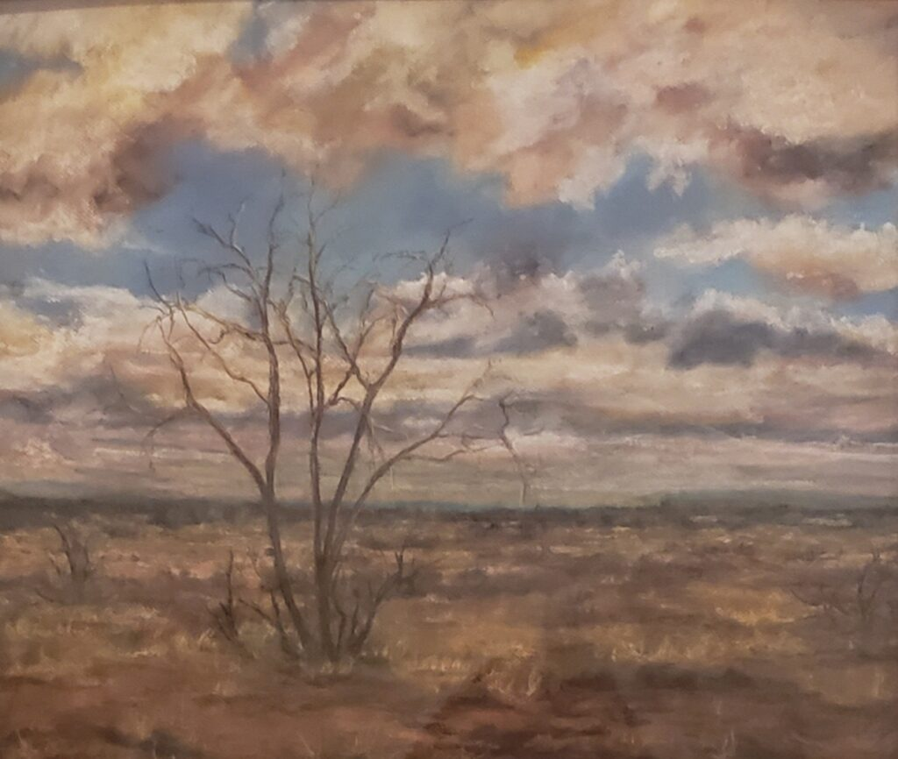
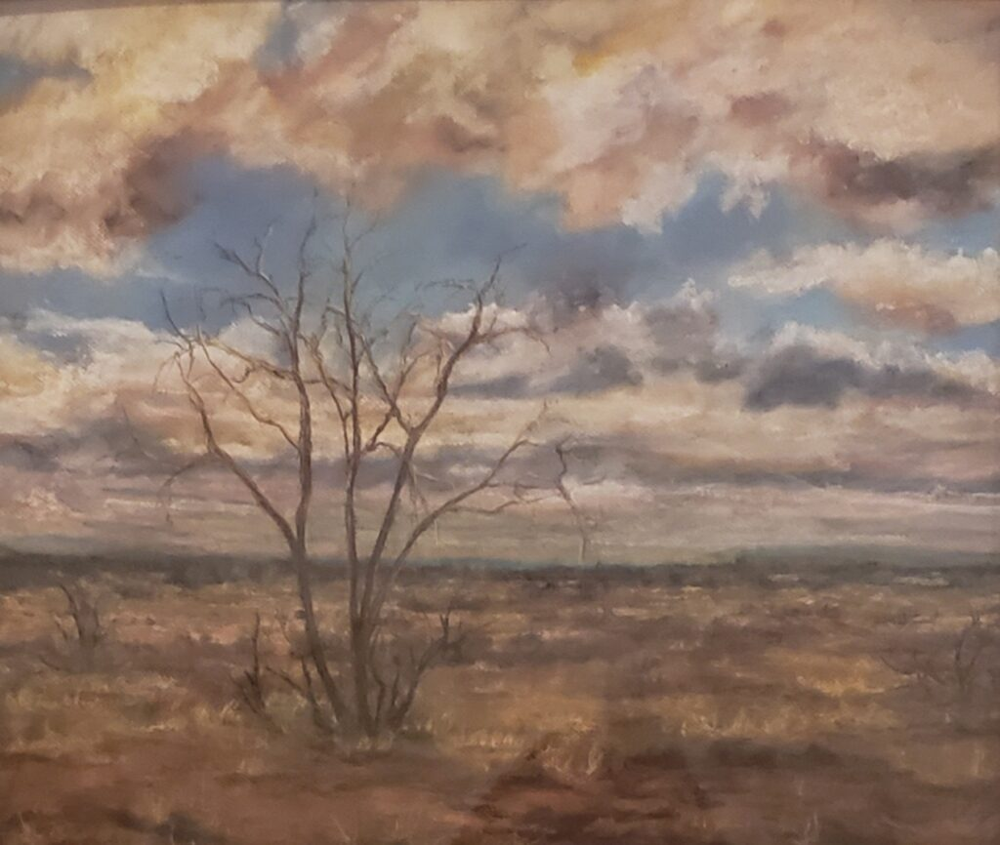

About The Artist
I have always done some type of art. My grandmother was an artist and she shared her passion with me. I had told someone in school as a teenager that I felt as if my hands were made for sculpting, even though I had never sculpted. I started sculpting over 20 years later. I have been sculpting about 15 years now. It became my favorite medium. Prior to that I mainly did pastels. Apparently I like using my hands as tools the most. I love sculpting. I really hope you enjoy what I have created as much as I do creating it. Stay safe and happy!